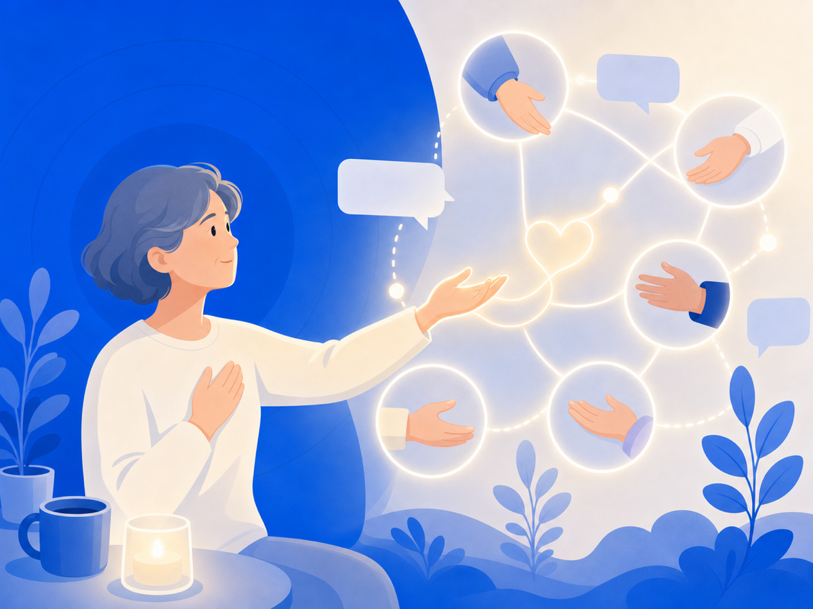

도움을 청하는 게 용기인 이유 — 사회적 지지의 과학


"나 때문에 주변 사람이 힘들어질까 봐요." 사이버불링이나 악플을 경험한 분들이 자주 하는 말이에요. 혼자 삭이고, 아무것도 아닌 척 버티고, 친구 연락이 와도 "나 괜찮아"라고 답한 뒤 휴대폰을 엎어두죠. 도움을 청하는 대신 더 깊이 고립되는 쪽을 택하는 거예요. 그런데 연구는 그 선택이 오히려 회복을 더디게 한다고 말해요.
지지 한 명이 스트레스의 충격을 줄여줘요
심리학자 코헨(Sheldon Cohen)과 윌스(Thomas Wills)가 1985년에 완충 가설(buffering hypothesis)을 정리했어요. 핵심은 간단해요. 스트레스가 높은 상황일수록, 내 상황을 이해해 주는 사람이 곁에 있을 때 그 충격이 현저히 줄어든다는 거예요.
완충재처럼요. 딱딱한 바닥에 넘어져도 두꺼운 매트 위라면 덜 다치는 것처럼, 사회적 지지는 스트레스가 몸과 마음에 미치는 해로운 영향을 막아줘요. 그것이 정서적 공감이든, 실질적인 도움이든 — 상황에 맞는 지지가 갖춰질 때 그 효과가 두드러진다는 것도 확인됐어요.
받는 것만이 아니라, 나누는 것도 회복이에요
흥미로운 사실이 있어요. 일본 지역 사회를 대상으로 한 연구(2006)에서, 지지를 받을 때뿐만 아니라 누군가에게 지지를 줄 때도 우울 증상 완충 효과가 나타났어요. 연결감 자체가 회복의 재료인 거예요. 혼자 고립되면 받지도, 주지도 못하게 되는 거고요.
"말해봤자 해결되나요?"라는 의심
그 마음, 충분히 이해해요. 특히 악플처럼 온라인에서 일어나는 일은 설명하기도 어렵고, 들어줘도 뭘 해줄 수 있는지 막막하죠. 그래도 여러 연구는 상황에 맞는 사회적 지지가 스트레스의 충격을 완충할 수 있다고 봐요. 완전한 해결이 없어도, 내 상황을 이해해 주는 사람이 딱 한 명만 있어도 체감 부담이 달라질 수 있어요. 혼자 앓는 게 더 강해 보이지만, 실제로는 더 느리게 회복하는 길일 수 있어요.
오늘 해볼 수 있는 것
작게 시작해도 돼요. 신뢰할 수 있는 한 사람에게 "요즘 좀 힘들어"라고 말하는 것. 그 한 마디가 생각보다 많은 걸 바꿔줘요. 전문 상담사에게 연락하는 것도 물론 좋은 선택이에요. 회복은 혼자 이겨내는 게 아니라, 조금씩 기댈 곳을 찾아가는 과정이에요. 여러분에게 기댈 곳이 있었으면 해요.
이 글은 일반 정보예요. 구체적인 일은 전문가(상담·변호사)와 상의하세요. 많이 힘들 땐 자살예방상담 109(24시간)가 있어요.
참고 자료
- Cohen, S. & Wills, T. A. (1985). Stress, social support, and the buffering hypothesis. Psychological Bulletin, 98, 310–357 — Semantic Scholar
- PubMed: Stress buffering effects of social support on depressive symptoms in middle age: reciprocity and community mental health (2006)
- ScienceDirect: Social Support Hypothesis — overview